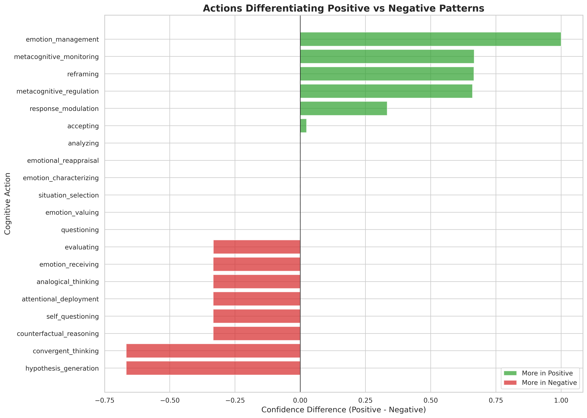
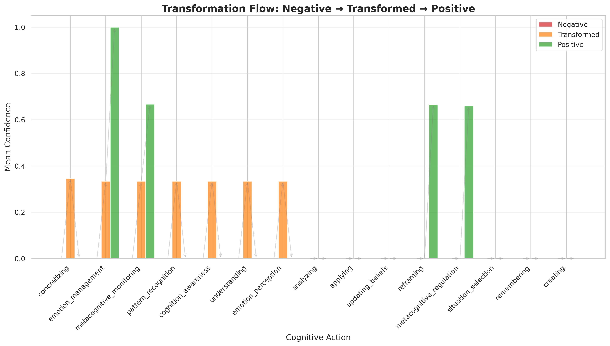
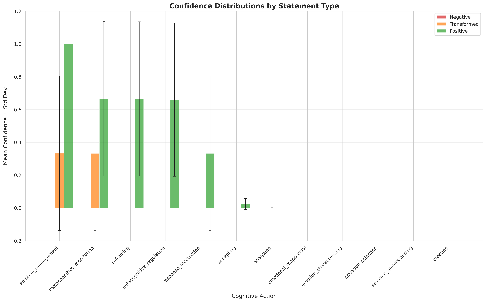

7. Visualizations
7.1 Action Heatmap

7.2 Difference Analysis

7.3 Transformation Flow

7.4 Confidence Distributions

Comprehensive evaluation of cognitive action patterns in healthy vs unhealthy thought processes
Generated: 2025-10-16 18:25:41
Entries Analyzed: 3 (sample of 3)
This analysis examined 3 thought pattern entries across 3 different cognitive pattern types. Using dual probe inference (token-by-token and whole-string analysis), we identified which cognitive actions differentiate healthy (positive) from unhealthy (negative) thought patterns, and how transformation statements facilitate positive change.
These cognitive actions are most strongly associated with healthy, positive thought patterns:
| Rank | Cognitive Action | Positive | Negative | Difference |
|---|---|---|---|---|
| 1 | emotion_management | 1.0000 | 0.0000 | +1.0000 |
| 2 | metacognitive_monitoring | 0.6667 | 0.0000 | +0.6667 |
| 3 | reframing | 0.6654 | 0.0000 | +0.6654 |
| 4 | metacognitive_regulation | 0.6602 | 0.0000 | +0.6602 |
| 5 | response_modulation | 0.3333 | 0.0000 | +0.3333 |
| 6 | accepting | 0.0243 | 0.0000 | +0.0243 |
| 7 | analyzing | 0.0000 | 0.0000 | +0.0000 |
| 8 | emotional_reappraisal | 0.0000 | 0.0000 | +0.0000 |
| 9 | emotion_characterizing | 0.0000 | 0.0000 | +0.0000 |
| 10 | situation_selection | 0.0000 | 0.0000 | +0.0000 |
These cognitive actions are most strongly associated with unhealthy, negative thought patterns:
| Rank | Cognitive Action | Negative | Positive | Difference |
|---|---|---|---|---|
| 1 | hypothesis_generation | 0.6667 | 0.0000 | -0.6667 |
| 2 | convergent_thinking | 0.6667 | 0.0000 | -0.6667 |
| 3 | counterfactual_reasoning | 0.3333 | 0.0000 | -0.3333 |
| 4 | self_questioning | 0.3333 | 0.0000 | -0.3333 |
| 5 | analogical_thinking | 0.3333 | 0.0000 | -0.3333 |
| 6 | attentional_deployment | 0.3333 | 0.0000 | -0.3333 |
| 7 | emotion_receiving | 0.3333 | 0.0000 | -0.3333 |
| 8 | evaluating | 0.3333 | 0.0002 | -0.3332 |
| 9 | questioning | 0.0000 | 0.0000 | -0.0000 |
| 10 | emotion_valuing | 0.0000 | 0.0000 | -0.0000 |
These cognitive actions show the strongest transformation effect (negative → transformed):
| Rank | Cognitive Action | Negative | Transformed | Change |
|---|---|---|---|---|
| 1 | concretizing | 0.0000 | 0.3456 | +0.3456 |
| 2 | emotion_management | 0.0000 | 0.3336 | +0.3336 |
| 3 | metacognitive_monitoring | 0.0000 | 0.3333 | +0.3333 |
| 4 | pattern_recognition | 0.0000 | 0.3333 | +0.3333 |
| 5 | cognition_awareness | 0.0000 | 0.3333 | +0.3333 |
| 6 | understanding | 0.0000 | 0.3333 | +0.3333 |
| 7 | emotion_perception | 0.0000 | 0.3333 | +0.3333 |
| 8 | analyzing | 0.0000 | 0.0008 | +0.0008 |
| 9 | applying | 0.0000 | 0.0000 | +0.0000 |
| 10 | updating_beliefs | 0.0000 | 0.0000 | +0.0000 |
Breakdown by cognitive pattern type:
| Pattern Type | Count | Avg Confidence |
|---|---|---|
| Negative self-evaluative loop | 30 | 0.5018 |
| Cognitive depletion pattern | 30 | 0.3665 |
| Intrusive suicidal fixation | 30 | 0.3013 |